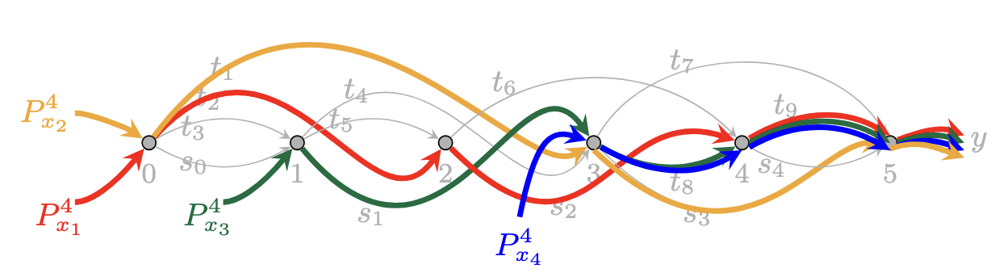
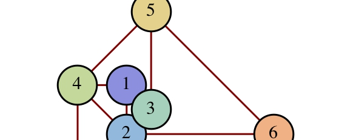
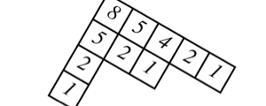
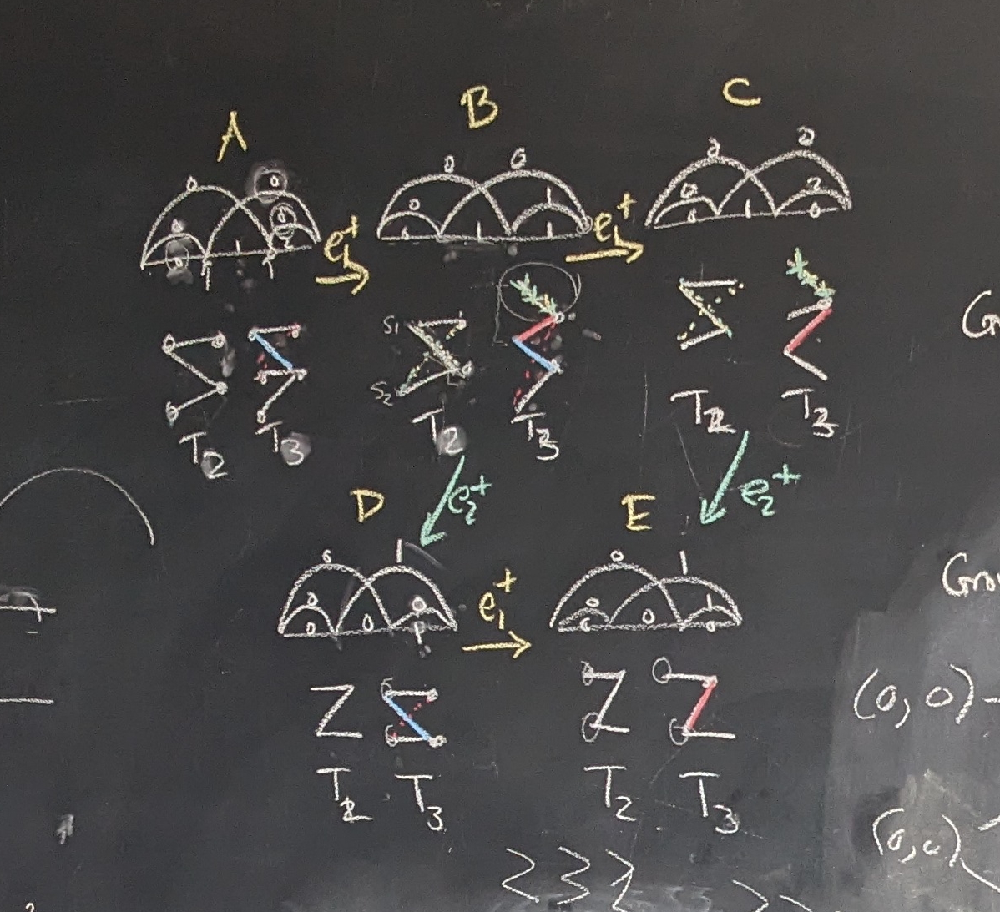
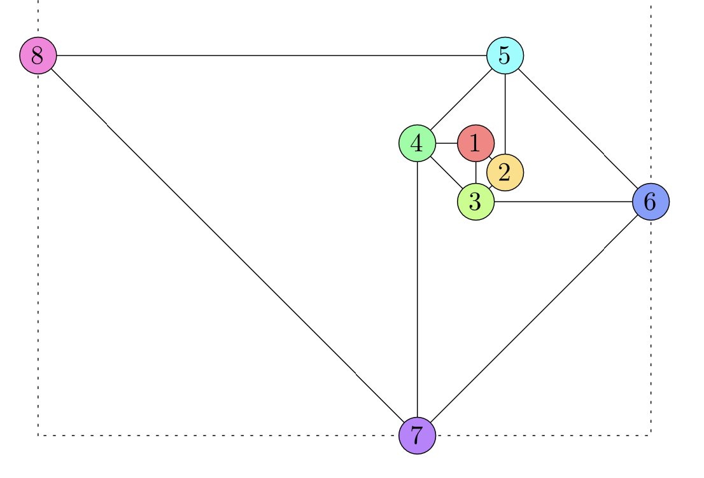
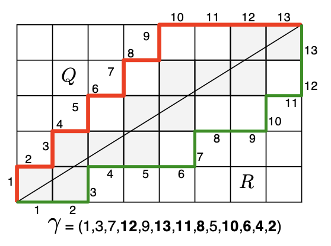

Research in Pure Mathematics
I explore the frontiers of enumerative and algebraic combinatorics through experimentation, computation, visualization, and teamwork.
Research at a Glance
- Publications
- Talks
- QC Experimental Mathematics Lab (research with students)
Research Topics
My expertise is in developing combinatorical models that explain mathematical concepts. My main areas of research have been:

Flow polytopes
Nonattacking chess piece placements
Core partitions and Coxeter groups
I also enjoy collaborating in other areas. I have written on Hecke triangle groups, dynamical systems, voting theory, and the bond structure of chemical compounds.
Flow polytopes
Flow polytopes are high-dimensional geometric objects that characterize all ways to route flow through a network. In joint work with Rafael González D'León and Martha Yip, we developed combinatorial objects called permutation flows that explain the structure of a much larger class of flow polytopes than was previously known.
- Read the Paper
- Interact with an example (Courtesy of Rafael González D'León)

Nonattacking chess piece placements
In how many ways can you place q chess pieces on a polygonal chessboard so that no two pieces attack one another? In joint work with Thomas Zaslavsky and Seth Chaiken, we developed a technique to count chess piece placements using Ehrhart theory (the theory of counting lattice points in polytopes) in a series of seven papers entitled A q-Queens Problem.
- Part I has the General Theory while Part II specializes to the square board.
- Part III provides explicit formulas for pieces that move horizontally, vertically, or along diagonals.
- Part IV explores the period of these counting quasi-polynomials (by examining configurations of pieces). This led to research in dynamical systems (joint with Arvind Mahankali) which sparked an interest in chess billards.

Core partitions and Coxeter groups
I study the combinatorics surrounding reflection groups, which include abacus diagrams, core partitions, and bounded partitions
- Brant Jones and I collaborated to understand fully commutative affine permutations (type A) and then extended the idea of abacus diagrams and core partitions to types B, C, and D.
- This led to fundamental research in simultaneous core partitions — both exploring their relationship to hyperplane arrangements, and developing conjectures related to self-conjugate core partitions (with Rishi Nath).
- In joint work with Cesar Ceballos and Tom Denton we developed new techniques to explore the zeta map on (a,b)-Dyck paths.

The ArtVote Experiment
ArtVote was an investigation into the aesthetics of generative art. My students and I programmed Mathematica to generate thousands of images that varied in style, color palette, and density of composition. We set up a web-based platform for visitors to rate the generated images; we used the 147596 total ratings to help determine which properties make art the most beautiful.
- We're no longer processing ratings, but you can still see the interface here.
- You can see the best and worst rated images here.
- Learn more about the project.